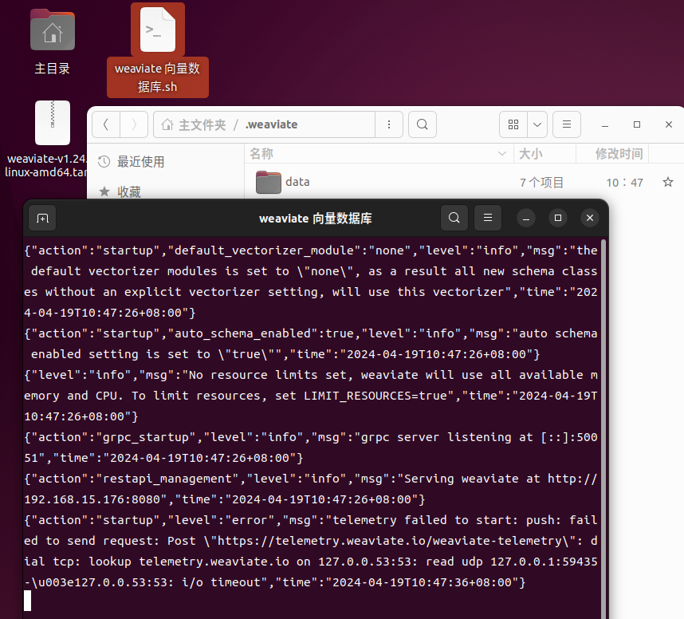

向量数据库也是数据库啊，是吧，就放到
官方文档：Home | Weaviate - Vector Database
该节记录一下
2024-04-19下载的版本是
上面下载的是压缩包，需要将包内的可执行文件添加到
sudo tar -zxvf weaviate-v1.24.9-linux-amd64.tar.gz -C /usr/local/bin
# 推荐
sudo tar -zxvf weaviate-v1.24.9-linux-amd64.tar.gz -C /usr/local/bin weaviate
解压时可以指定压缩包内某个文件解压到指定目录，如果不指定，则解压所有文件，如下图：
你也可以先在某个文件夹（例如：上面的桌面）解压，之后在移动指定文件到
sudo mv weaviate /usr/local/bin
weaviate --scheme http --host 192.168.xxx.xxx --port 8080
# 如果是 https 则可能需要下面的这两个参数
# 注意：这里没有测试
--tls-certificate xxx --tls-key xxx
如下图，是在桌面打开的终端之后启动的 weaviate，他会在桌面创建 data 文件夹
为了后面启动的时候比较方便，这里创建了一个快速启动的脚本
#!/bin/bash
# 打开一个新的终端，并指定终端窗口标题，指定终端目录
gnome-terminal --title 'weaviate 向量数据库' --working-directory=/home/u1/.weaviate -- /bin/bash -c 'weaviate --scheme http --host 192.168.xxx.xxx --port 8080'
exit
